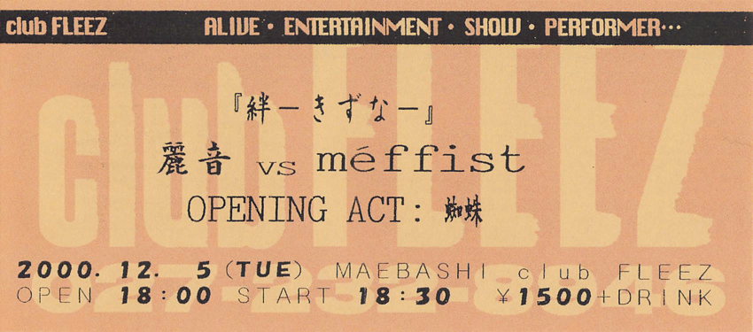

蜘蛛-kumo-, méffist
Note: Click on the image to see a larger version.
1. Kinu no Ito to Kumo no Ito (絹の絲と蜘の意図)
2. su.i.cide
3. Shimobe (隷)
MC
4. eternal season
5. Gyou (行)
6. Fusei Reiju (浮生麗終)
MC
7. less
Session 1
LUST [TYPE M] (LAWINE's song)
session 2
ask... (CRESCENT's song)
On this day, for the first time in a long time, they appeared on stage with ropes like a spider's web.
Fumiyuki was wearing a military uniform. Hirokazu was wearing a red shirt with a bloody bandage attached with a safety pin.
And since today's live was to be "with a big announcement," I watched the live with wondered, "What is it?"
The big announcement is followings:
RAIN's first oneman live will be held at Maebashi (前橋) club FLEEZ on January 7th 2001.
After the live, RAIN will disband.
On this day, I was impressed by the big smile on Fumiyuki's face before the big announcement. I was also touched by Fumiyuki's shout of "Doumo Arigatou! (Thank you so much! in English)" after the song "less", without using a microphone.
And in Session 1, the following members played LUST [TYPE M] (LAWINE's song): Vocal:Fumiyuki (from RAIN), Guiter:Maki (from méffist), Bass:HIROKAZU (from RAIN), Drams:SHINGO (from méffist). At this time, Fumiyuki was dressed as Santa Claus. It might be surprisingly cute.
Session 2 was a performance of "ask..." (CRESCENT's song) by all the bands that participated today (RAIN, méffist, and kumo-).
After this live, I listened to RAIN's new demo tape "Eien" (永遠) at home. As RAIN will be breaking up, the lyrics of "eternal season" pierced my heart.
{kind=link}
{kind=link}
{kind=link}
{kind=link}
{kind=link}
{kind=link}
{kind=link}
{kind=link}
{kind=link}
{kind=link}
{kind=link}
{kind=link}
{kind=link}